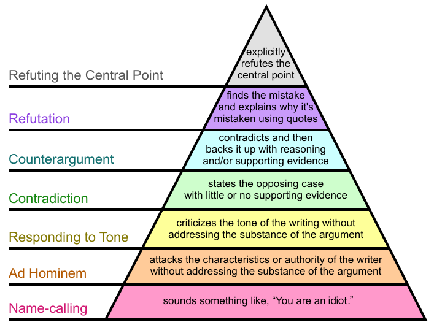
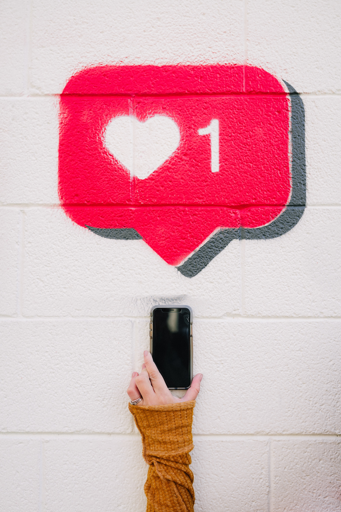

Top 3 Propaganda techniques
1. Card Stacking
An advertizer or an agent would omit any negative information about their product and services and only emphasizes positive information.

The advertiser claims their fries have 40% less fat with still the same taste as the normal fries.
(It is still deep fried and a lot of chemicals are added though...)
2. Name Calling
An entity speaks negatively about an idea or another entity. This can be used in political, social or corporate advertizement settings. This technique is somewhat effective in terms of giving a negative stereotypical image to the target entity.
 Image captured from Wikipedia, "Graham's Hierarchy of Disagreement"The "name-calling" tactic can be found common in the society and it sits on the bottom of the "hierarchy of disagreement" described by Paul Graham.
3. Bandwagon
The person or entity deliverying the message would emphasize their product or information is popular by a large number of people. This uses human psychology of herd mentality and not missing out on what's popular in the society. This technique is often used in the social media context, such as 'like' or 'follow' button.
 Photo by Karsten Winegeart on UnsplashPeople tend to care about how many likes they received, and how many followers a person has on to determine the value of the person or entity. This can spur people's erratic and attention-seeking behaviors. Advertizers might use this technique to target people who are sensitive to what other people think about them.
Part of the information above comes from Canz Marketing. Click here to see more types of propaganda.
 Photo by
Photo by